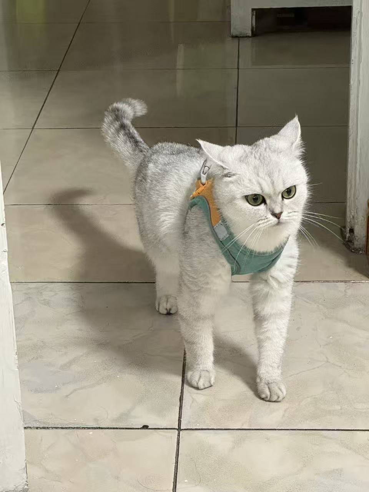
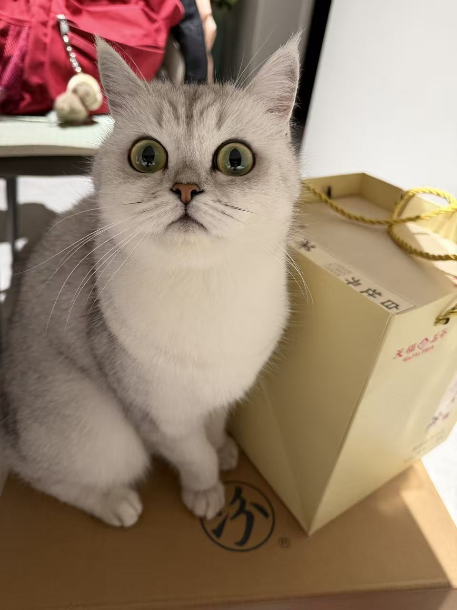
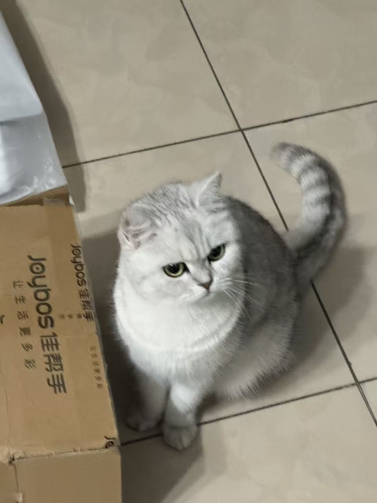
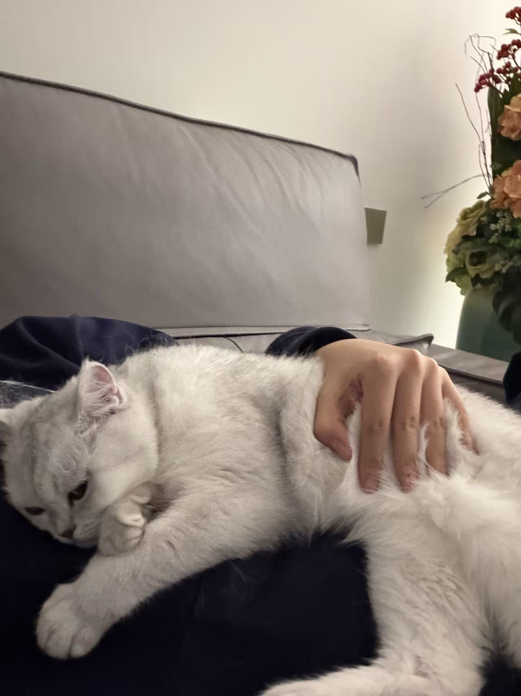
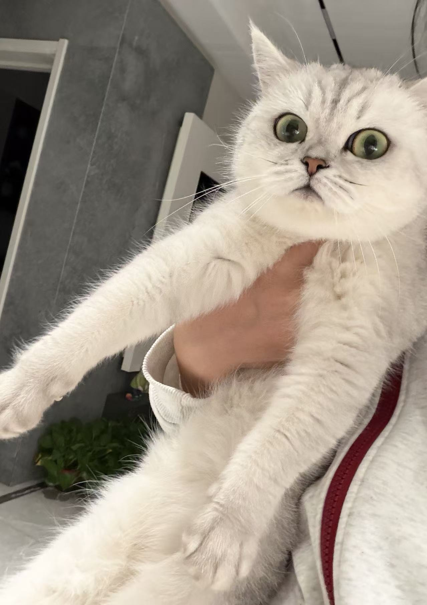

吃饭
准时出现，认真享用每一餐，对食物保持真诚且坚定的热情。
今日花卷签
给今天一个轻轻的开场：可能是休息建议，也可能是一句适合放慢脚步的小提醒。
今日签文
今天适合把重要的事放慢一点，把喜欢的事靠近一点。
花卷的能力并不追求复杂，但讲究稳定、优雅和一点点出其不意。
准时出现，认真享用每一餐，对食物保持真诚且坚定的热情。
擅长寻找舒服的位置，进入高质量休息，醒来后精神饱满。
动作灵活，出手果断，面对目标时具有优秀的专注力。
确认窗边、沙发和饭盆状态，开始一天的观察工作。
把阳光、毯子和安静角落组合成一个高效恢复方案。
这些项目记录了花卷的审美方向：柔软、圆润、带一点名字本身的幽默感。
花卷的第一个作品，是一朵安静又可爱的花，适合放在窗边和午后的光里。
花卷的第二个作品，是一个圆润、柔软、有名字感的卷，适合代表日常的小满足。
生活照片合集
把吃饭、发呆、观察和休息收进一组轻轻的照片里。双击任意照片，可以看完整大图。





想邀请花卷看花、看卷，或者讨论一顿饭的严肃意义，可以从这里开始。
保持好奇，保持柔软，也记得准时吃饭。花卷会在舒服的位置等你。